News:
- ◊ We participateed the 9th edition of CVPR2024 workshop NTIRE: New Trends in Image Restoration and Enhancement challenge and won first place among 427 participants.
- ◊ Our paper "Dynamic Implicit Image Function for Efficient Arbitrary-Scale Super-Resolution" was accepted by ICME 2024.
- ◊ Our paper "CAPformer: Compression-Aware Pre-trained Transformer for Low-Light Image Enhancement" was accepted by ICME 2024.
- ◊ Our paper "Latent Modulated Function for Computational Optimal Continuous Image Representation" was accepted by CVPR 2024.
- ◊ Our paper "Learning from Text: A Multimodal Face Inpainting Network for Irregular Holes" was accepted by IEEE Transactions on Circuits and Systems for Video Technology.
- ◊ Our paper "Reconstruction with robustness: A semantic prior guided face super-resolution framework for multiple degradations" was accepted by Image and Vision Computing.
- ◊ December 15, 2023 Professor Weisi Lin, visited our lab and gave a talk.
- ◊ October 20, 2023 Scholar Chao Dong, the first author of SRCNN, visited our lab and gave a talk.
- ◊ September 2023, the Sino-German Mobility Project Joint Exchange Meeting was successfully held again.
- ◊ Our paper "MB-TaylorFormer: Multi-branch Efficient Transformer Expanded by Taylor Formula for Image Dehazing" was accepted by ICCV 2023.
- ◊ Our papers "FourLLIE: Boosting Low-Light Image Enhancement by Fourier Frequency Information" and "Brighten-and-Colorize: A Decoupled Network for Customized Low-Light Image Enhancement" were accepted by ACM MM 2023.
- ◊ We participated the 8th edition of CVPR2023 workshop NTIRE: New Trends in Image Restoration and Enhancement challenge and won 2nd place among final 93 participants.
- ◊ March 2023, the Sino-German Mobility Project Joint Exchange Meeting was successfully held.
- ◊ We participated the 5th edition of CVPR2022 UG2+ Challenge: BRIDGING THE GAP BETWEEN COMPUTATIONAL PHOTOGRAPHY AND VISUAL RECOGNITION and won 4th place among final 20 participants.
- ◊ We participated the 6th edition of CVPR2021 workshop NTIRE: New Trends in Image Restoration and Enhancement challenge and won 11th place among 200+ participants.
- ◊ We participated the 5th edition of CVPR2020 workshop NTIRE: New Trends in Image Restoration and Enhancement challenge and won 7th place among 286 participants.
Publications:
| 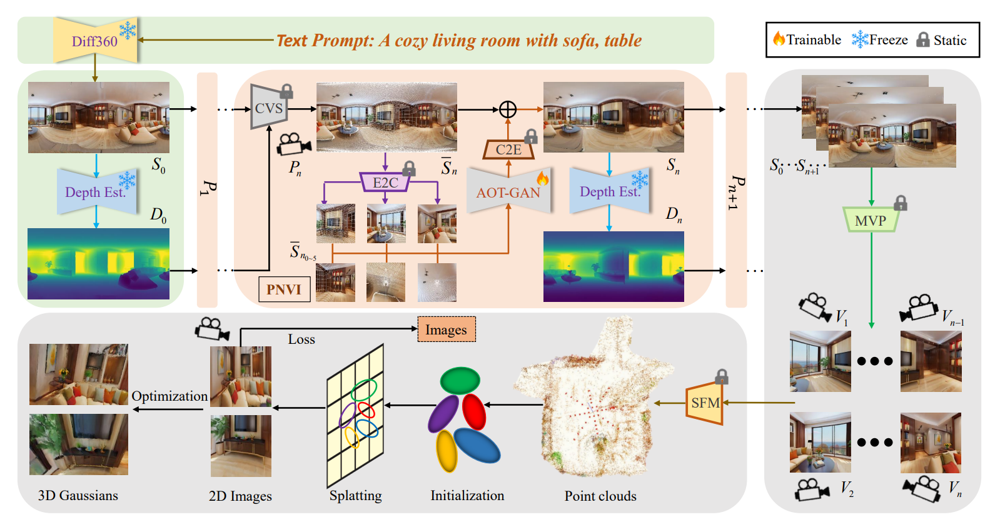 |
Yikun Ma, Dandan Zhan, Zhi Jin* |
| 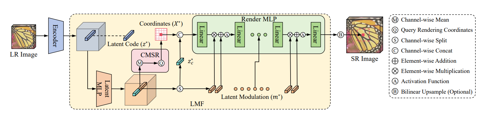 |
Zongyao He, Zhi Jin* |
| 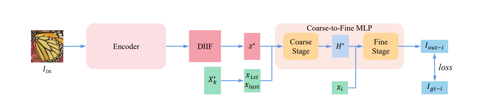 |
Zongyao He, Zhi Jin* |
| 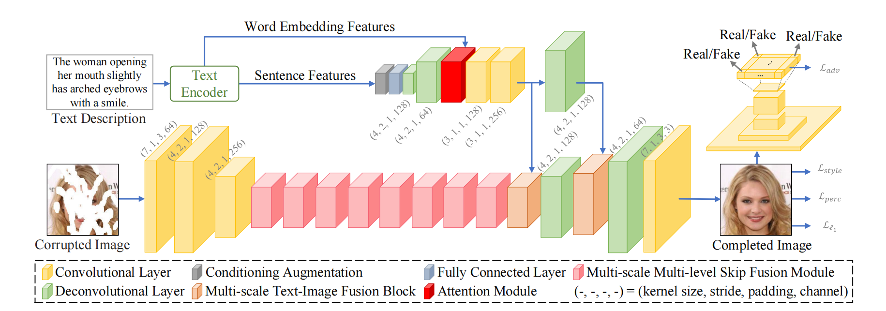 |
Dandan Zhan, Jiahao Wu, Xing Luo, Zhi Jin* |
| 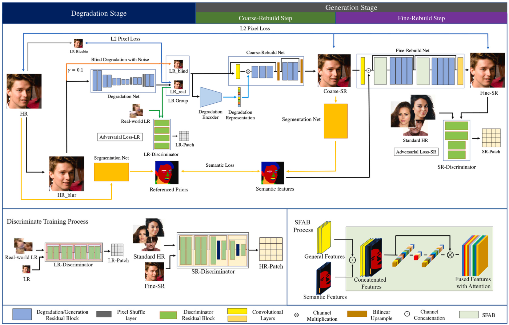 |
Hongjun Wu, Haoran Qi, Huanrong Zhang, Zhi Jin*, Driton Salihu, and Jian-Fang Hu |
| 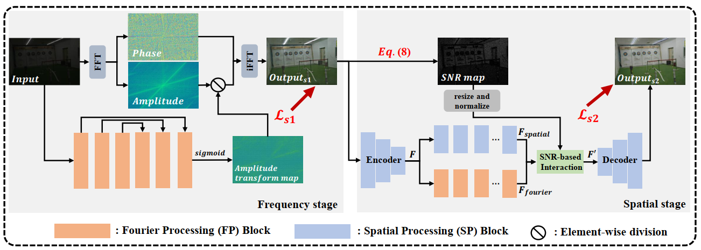 |
Chenxi Wang, Hongjun Wu, and Zhi Jin* |
| 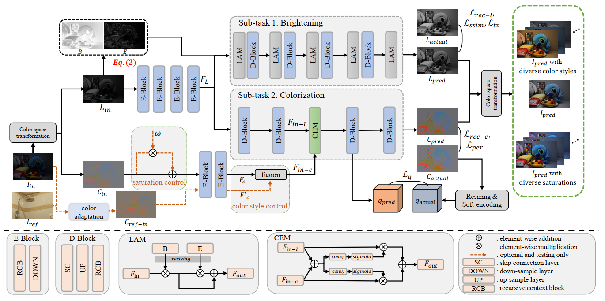 |
Chenxi Wang, and Zhi Jin* |
| 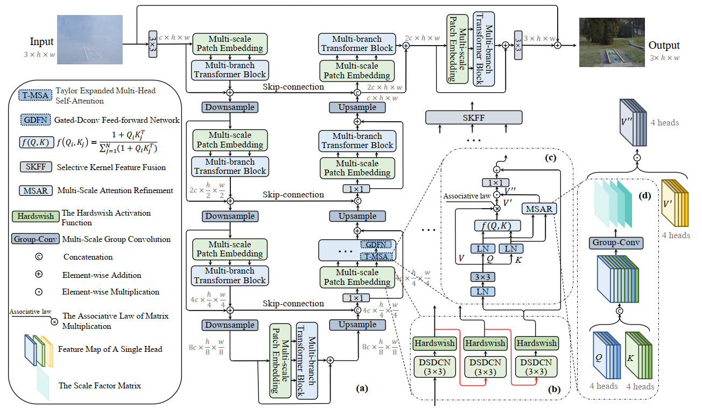 |
Yuwei Qiu, Kaihao Zhang, Chenxi Wang, Wenhan Luo, and Zhi Jin* |
| 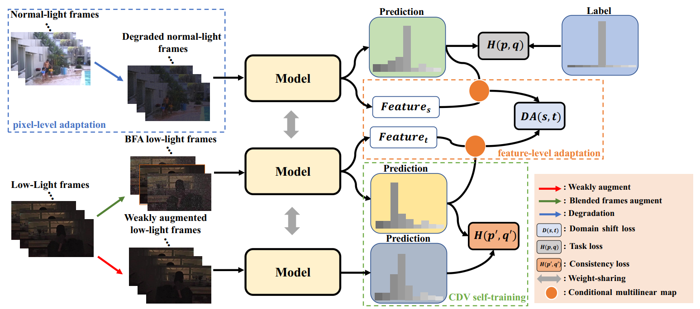 |
Chenxi Wang, Jingzhou Luo, Xing Luo, Haoran Qi and Zhi Jin* |
| 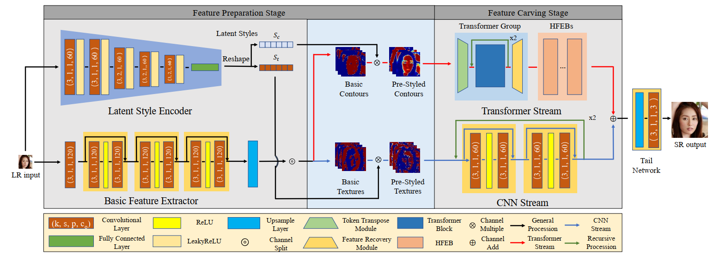 |
Haoran Qi, Yuwei Qiu, Xing Luo, and Zhi Jin* |
| 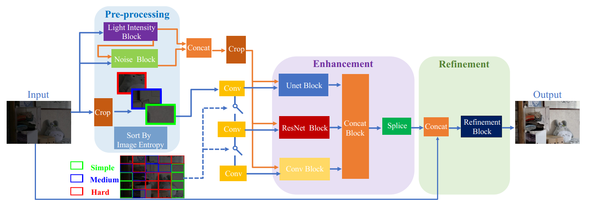 |
Hongjun Wu, Haoran Qi, Jingzhou Luo, Yining Li, and Zhi Jin* |
| 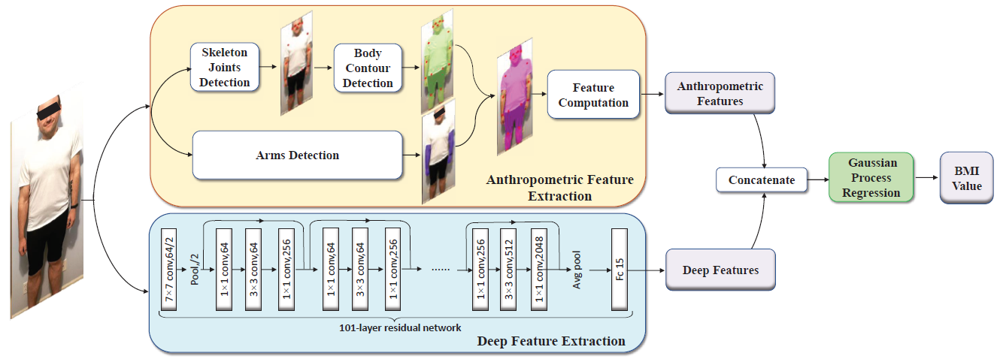 |
Zhi Jin, Junjia Huang, Wenjin Wang, Aolin Xiong, Xiaojun Tan* |
| 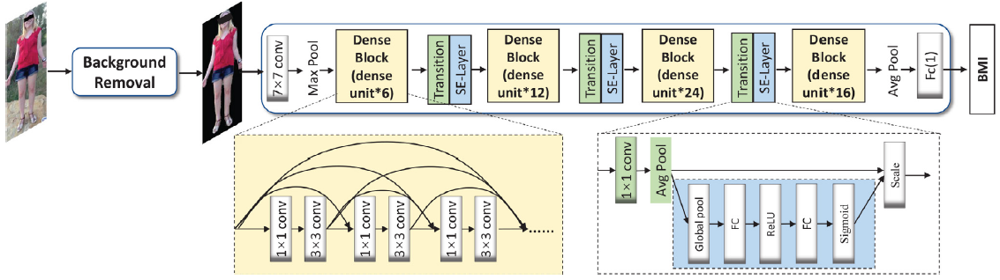 |
Zhi Jin, Junjia Huang, Aolin Xiong, Yuxian Pang, Wenjin Wang, Beichen Ding* |
| 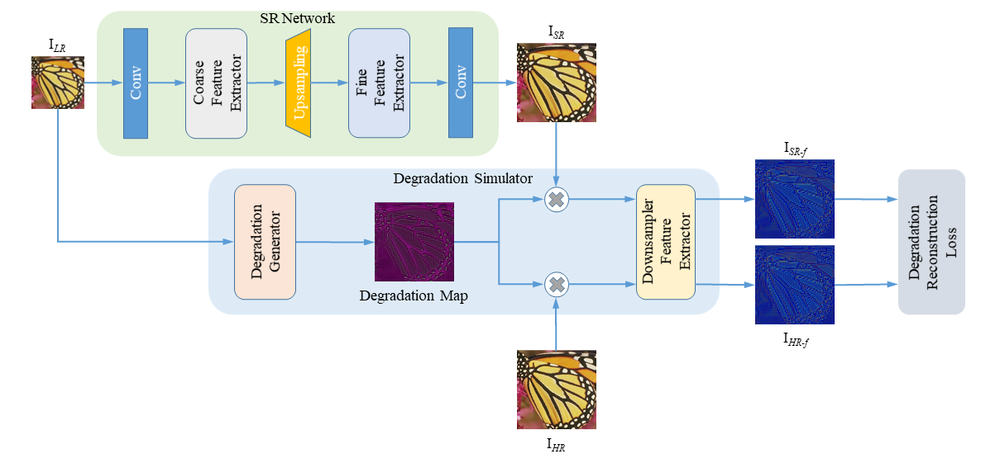 |
Zongyao He, Zhi Jin*, Yao Zhao |
| 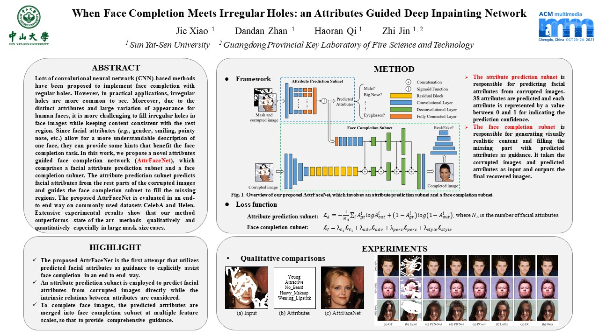 |
Jie Xiao, Dandan Zhan, Haoran Qi, Zhi Jin* |
| 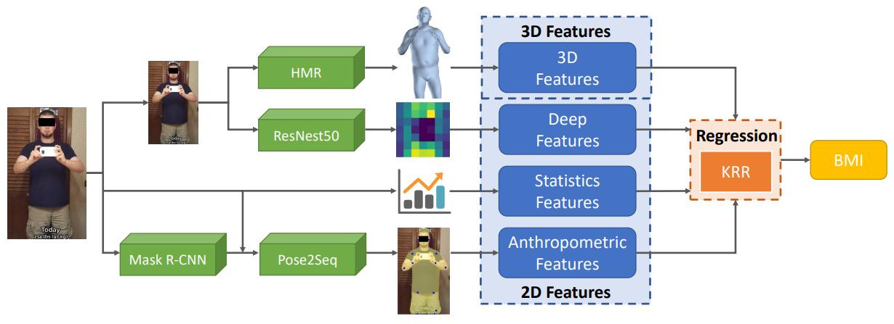 |
Junjia Huang, Chenming Shang, Aolin Xiong, Yuxian Pang, Zhi Jin* |
| 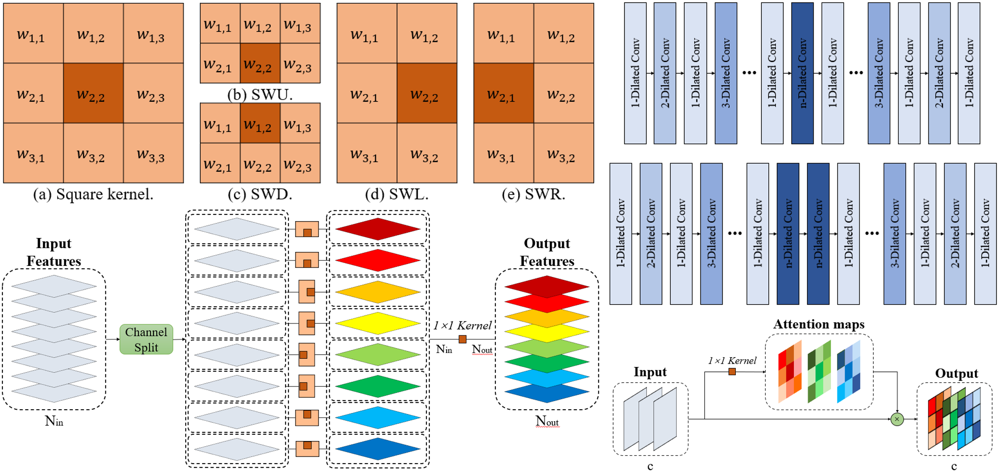 |
Jie Xiao, Zhi Jin*, Huanrong Zhang |
| 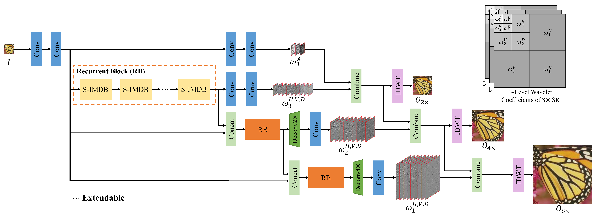 |
Huanrong Zhang, Jie Xiao, Zhi Jin* |
| 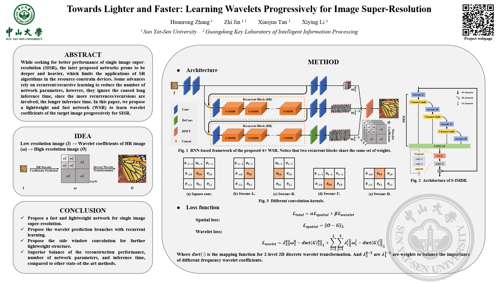 |
Huanrong Zhang, Zhi Jin*, Xiaojun Tan, Xiying Li |